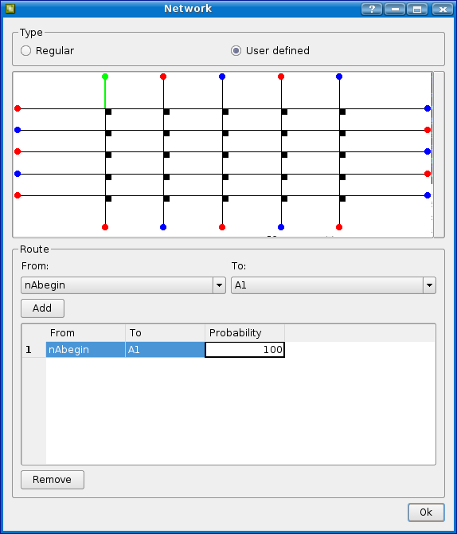
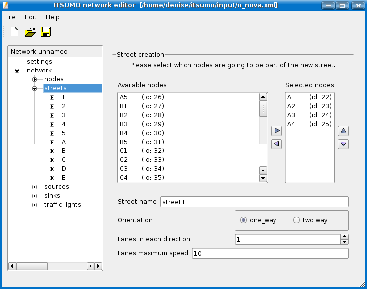

Instalação
A versão disponibilizada do ITSUMO considera o uso de Linux apenas. Para a instalação são necessários os seguintes pacotes instalados:
- Usando qualquer distribuição Linux:
- gcc
- glibc
- glibc-devel
- glib
- glib-devel
- libstdc++
- libstdc++-devel
- python
- qt3
- qt3-devel
- PyQ (em algumas distribuições PyQT distributions, é chamado kdebindings3-python ou python-qt3)
- PyQT-devel
- python
- python-devel
- python-xml (chamado PyXML no Fedora Core 5)
- freeglut
- freeglut-devel
- Usando SUSE
- kdebase3-devel
- Usando Ubuntu 64 bits:
- libqt3-compat-headers
- libglpng
- libglpng-dev
- Usando Fedora Core 5:
- libXt
- libXt-devel
- libjpeg
- libjpeg-devel
- libmng
- libmng-devel
Após a instalação de todos os pacotes:
1 - descompactar o arquivo zip fornecido;
2 - abrir um terminal modo texto; avançar ate a pasta '$itsumo_root$/src' e digitar 'make';
Organização:
* na pasta '$itsumo_root$/src/' se encontram todos fontes do simulador.
* na pasta '$itsumo_root$/docs/' se encontra a documentacao do simulador.
* na pasta '$itsumo_root$/input/' se encontram arquivos de entrada do simulador, como xml de topologias, configuracoes, etc.
Para rodar a interface do simulador, que centraliza todas as operações necessárias para o usuário regular:
1 - na pasta raiz do simulador, digitar './witsumo'; esse comando executará a interface.
Para problemas na instalação e uso do simulador, consultar a Solução de problemas.
(Voltar Topo)
Interface e Processos
A interface é incicializada na pasta raiz do simulador , digitando './witsumo'. Para uma simulaçào, são necessários 2 ou 3 arquivos de configuração:
1 - topologia: arquivo xml com as definições da topologia;
2 - configuração: arquivo xml com as configurações para rodar a simulação (no. de passos, qual rede usar, etc);
3 - agentes: define o mapeamento de agentes semáforos para controle semafórico (opcional!).
Na interface principal temos 2 menus ao alto:
1 - File: contém as operações para abrir, salvar e salvar como, referentes ao arquivo de configuração. Ou seja, essas operações operam o que o nome indica sobre o arquivo de configuração do simulador (item 2 acima).
2 - Help: com a primeira opção desse menu é possível visualizar a documentação em html do simulador.
Além disso, 3 abas compõem a interface principal:
1 - Configuration: aqui são definidas as configurações da simulação, como sensores a serem usados, no. de passos, etc. A explicação sobre cada item encontra-se nesta documentação.
2 - Agents Definition: aqui é feito o mapeamento dos agentes para os semáforos, caso seja necessário uso dessa opção.
3 - Simulation: aqui se encontram as opções 'Run Simulation' que executa a simulação com as configurações definidas nas abas anteriores, e a opção 'Visualize' que abre uma janela com a visualização 3D. Uma vez que a janela esteja aberta, é necessário digitar 's' (start) para dar início ao processo.
Gerando a Configuração
Para dar início a uma simulação e visualização é necessário definir os parâmetros de simulação.
Configuração Geral
Feita na aba Configuration. Ao abrir o programa (./witsumo) você verá uma janela como a da figura abaixo:

- Clique em 'Create New Net' (ver aqui) para criar uma nova topologia, ou clique no botão 'Choose Net' e procure pelo arquivo gerado previamente pelo editor de topologias. Para visualizar a topologia selecionada, clique em 'See Net'
- No campo Steps, escreva quantos passos você deseja que a simulação tenha e preencha também o campo Default Deceleration, que indica a desaceleração padrão para os veículos.
- No painel Drivers, você pode inserir motoristas
personalizados:
- Clique em Insert Driver.
- Agora selecione o tipo de motorista e clique em OK.
- Há alguns tipos tipos de morotistas:
- Modelo Standard:
É caracterizado por um comportamento aleatório, suas rotas são sorteadas a cada ponto de decisão (cruzamento). É utilizado especialmente para povoar o cenário, e é baseado no modelo básico de Autômatos Celulares.
- Modelo FC (Floating Car):
Esse modelo de motorista apresenta um movimento pré-definido pelo usuário ou engenheiro de tráfego.
Definindo a rota do motorista:
- Clique em Routes, quando o modelo FC está selecionado, uma janela mostrando a visão geral da malha viária em forma de grafo se abrirá, nessa janela, os nodos sources são coloridos em azul e os sink de vermelho.
- Abaixo, na janela, faça a seleção do nodo de origem (From) e nodo destino (To) e clique em Add, note que a visualização mudará para verde a cor da rota selecionada.
- Na tabela de rota, podem ser modificadas as probabilidades do motorista seguir cada rota.
- Repita essa operação até que todo o trajeto desejado esteja inserido, e clique em Ok.

- Modelo IRC (Iterated Route Choice):
Nesse modelo, o motorista aprende ao interagir com o cenário de forma a escolher entre duas rotas pré-definidas através do uso de uma heurística baseada na duração do percurso das rotas nas últimas 'n' interações . O cenário é composto de uma laneset de entrada e duas rotas (rota 0, com maior capacidade de tráfego, e rota 1, com menor capacidade de tráfego em relação à rota 0) que ao final se encontram na laneset de destino na rede. Para um melhor entendimento deve ser consultado [KLUEGL, F., BAZZAN, A. L. C. Route Decision Behaviour in a Commuting Scenario: Simple Heuristics Adaptation and Effect of Traffic Forecast. In The Journal of Artificial Societies and Social Simulation, 2004]
Os parâmetros que definem esse motorista são:
- max_speed: velocidade maxima do motorista.
- source_laneset: laneset por onde os motoristas entram na rede.
- sink_laneset: laneset de convergencia, onde os motoristas saem da rede.
- route0_begin: laneset que da inicio a rota 0.
- route1_begin: laneset que da inicio a rota 1.
- init_heuristic: valor de heuristica inicial.
- learn_prob: probabilidade de aprendizagem.
- hist_size: tamanho do historico de aprendizagem (quantos valores ele armazena para reavaliacao da heuristica).
- Modelo Braess:
Modelo de motorista adaptado para o paradoxo de Braess. Para um correto entendimento deve ser consultado [BAZZAN, A. L. C., BOFFO, F., KLUEGL, F. Avoiding the Braess Paradox with Information Manipulation In: Proc. of the Workshop Agents in Traffic and Transportation, 2004, New York].
- Clique no campo State, e selecione ON, caso contrário esses motiristas não serão adicionados à simulação.
- Preencha também o campo max speed com a velocidade máxima desse motorista.
- No painel Sensors, é feita a
inserção de
sensores, eles são utilizados para coletar e registrar
medições feitas na malha ao longo da
simulação, e esses dados serão salvos
no
arquivo indicado no campo "Sensor File", abaixo estão
listados os tipos de sensores:
- lane sensor: mapa de
células com
ocupação (veículos), densidade e
velocidade
média na lane
- laneset sensor: densidade
das lanesets que
estão ligadas a um nodo com semáforo
- section in columns sensor:
densidade e
velocidade médias para cada section
- section in columns sensor printing names:
densidade e velocidade médias para cada section e o nome
desta
- visualization of section desities: apresenta densidade de cada section formatada para leitura do módulo visualizador
- visualization of section relative
densities:
densidades relativas para cada section, ou seja, caso haja um
semáforo a densidade máxima = 1, caso
contrário densidade = 1/velocidade máxima,
formatado
pera leitura pelo módulo visualizador
- visualization os stopped cars in section:
número relativo de carros parados na section, ou seja,
número de carros parados / número de
células,
formatado para leitura pelo módulo visualizador
- stopped cars in laneset:
imprime o
número total de carros e o número de carros
parados
na laneset
- total stopped cars in network:
imprime o
número total de carros parados na rede
- Clique em Insert Sensor, selecione o tipo de sensor e clique em OK.
- Como para os Drivers, selecione ON no campo State.

- Agora salve seu arquivo de configuração pelo menu File->Save.
Criação de um Cenário de Simulação
Para criar uma nova topologia, clicar em "Create New Net" a aba 'Configuration' da interface. A janela do editor de topologias será aberta.
Network:
Para criar uma nova rede, vá em File->New, será criada uma nova rede com o nome de empty.xml. O nome da rede pode ser modificado com o salvamento da rede, quando o programa perguntará por um nome para o arquivo a ser salvo. (File->save) A criação da rede deve obrigatoriamente começar pela criação dos nodos, com eles, será possível criar ruas, "sinks", "sources" e "traffic lights".Criação de nodos
- Clique em Nodes.
- Clique em "Create another node".
- Escolha um nome para o nodo (Node name), logo em seguida escreva as coordenadas do nodo (X coordinate, e Y coordinate). As coordenadas devem seguir o sistema mostrado na Seção Nodos.
- Repita os passos de 1 a 3 até que todos os nodos tenham sido criados.
Criação/Edição das Vias de Circulação (Streets/section/lane/laneset)
Para criar uma rua, devem ser selecionados os nodos que fazem parte dela, lembrando que os sinks e sources DEVEM ser incluídos na rua- Clique em "streets".
- Na seção "strees creation", selecione um nodo, então clique no botão de inserção, a ordem de inserção dos nodos é extremamente importante, logo, para uma rua que contenha os nodos n1,n2 e n3, respectivamente, os nodos devem ser inseridos nessa ordem.
- Repita a operação até que todos os nodos pertencentes à rua estejam inseridos.
- Em "street name" escreva o nome da rua.
- Em "orientation, selecione "one_way" para ruas de uma mão, ou "two_way" para ruas de duas mãos.
- Em "lanes in each direction" escreva quantas faixas tem a
rua,
se a rua tem diferentes números de faixas em
seções
diferentes,
coloque o máximo de faixas que a rua possui, a remoção e edição de faixas serão abordada posteriormente. - No último campo, selecione a velocidade máxima na rua.

Editando as Vias de Circulação
Adicionando e removendo sections
- Para adicionar sections em uma rua, vá em network->streets, e selecione a rua desejada.
- Clique com o botão direito do mouse na rua e selecione "Add new section".
- Edite as configurações da nova section no painel "Section edit", que aparecerá no lado direito da tela.
Adicionando e removendo lanesets e lanes
A edição das sections é feita de modo análogo à edição de streets, vá em network->streets, e selecione a section a ser editada, inclusões e exclusões de lanes e lanesets são feitas do mesmo modo utilizado para as sections.
Turning Probabilities
Aqui também são editadas as probabilidades de um carro tomar cada direção no nodo. Isso é feito na section de onde partem os carros. Vá em "network", clique em streets, selecione a rua que possui a section, e finalmente, selecione a section. Na parte direita da tela aparecerá um painel como na figura abaixo, mostrando as sections destino, e a chance de um carro ir para cada uma delas. Você pode editar os valores do campo "Probability", mas a soma das probabilidades deve ser 100 (caso não seja possível, use 99,9).
Sinks e Sources
Sinks e sources são nodos que podem colocar ou retirar veículos da rede, logo eles deve ser criados em nodos previamente existente. Um nodo pode, ao mesmo tempo, ser um sink e um source.Criando um source:
- Em 'network', clique source.
- Agora no lado direito da tela, clique em "Create a source", novos campos aparecerão na tela.
- O campo "First activation at iteraction (..) indica a partir de qual iteração o source começará a funcionar.
- Em "node", selecione o nodo onde o source será criado.
- Em "target laneset", seleciona a laneset para onde o source criará carros.
- Em "Activate every (..) iteractions", escreva a cada quantas iterações o source será acionado.
- Em "type", selecione o modo como os carros serão
inseridos, há 4 modos de inserção de
carros:
- Constant Probability: Insere veículos com probabilidade constante (Vehicles Insertion Rate)
- Variable Probability: Insere veículos com probabilidade variavel.
- Constant Flow:Insere um número fixo de veículos em cada tempo de ciclo.
- Variable Flow:Insere um determinado número de veículos em cada tempo de ciclo

Criando um sink:
- Em 'network', clique sink.
- Agora no lado direito da tela, clique em "Create a sink", novos campos aparecerão na tela.
- O campo "First activation at iteraction (..) indica a partir de qual iteração o sink começará¡ a funcionar.
- Em "Removal probability", selecione a probabilidade (de 0 a 1) de o sink remover um carro que passa por ele.
- Em "Node", selecione o nodo onde o sink será criado.
- em "Source laneset" selecione a laneset de onde o sink retirará carros.
Traffic Lights
Criando os traffic lights:
- Em "network", clique em "traffic lights".
- Escolha o nodo onde o traffic light será criado e clique em "Create traffic light".
- Agora você verá uma tela com uma
imagem do nodo
onde o traffic light foi criado, e com o painel "signal plan
edit".
A criação de um novo plano semafórico deve ser feita em todos os traffic lights, para isso, em "network", clique em "traffic lights", em seguida, clique com o botão direito do mouse no traffic light desejado e então em "Add new signalplan", lembrando que a operação deve ser repetida para todos os traffic lights.
Editando o plano semafórico
Nesse painel serão criadas as fases do plano semafórico, cada traffic light deve ter pelo menos uma fase:
- Clique em "Add phase".
- Ajuste o tempo de duração da fase em "Selected phase duration".
- Agora você deve adicionar os movimentos
permitidos nesta phase, lembrando
que esses movimentos partem das "incoming lanes" e vão para
as "outgoing lanes". Para fazer isso, clique na lane de onde vem o
movimento e arraste
até a laneset alvo, então solte o mouse. Note que
uma
linha colorida será criada, indicando que o movimento
é possível, veja a Figura abaixo. Agora repita a
operação
até
que tenha terminado todos os movimentos possíveis para essa fase,
lembre-se que se um movimento é possível, ele deve partir de
TODAS as lanes da laneset de origem.
* Após a edição dos planos semafóricos, as Turning Probabilities também devem ser reeditadas.

(Voltar ao Topo)
Configuração dos Agentes Semafóricos
A configuração dos agentes semafóricos pode ser feita na aba 'Agent Definition'.(Voltar ao Topo)
Simulando e Gerando a Visualização
Na aba 'Simulation' é possível executar a simulação e iniciar a visualização 3D dos resultados.
Para rodar a simulação, clique no botão Run!. A partir dos parâmetros definidos anteriormente será feita a simulação e os resultados salvos nos arquivos de log dos sensores configurados na aba 'Configuration'.
Para visualizar os resultados, clicar em Visualize!. Este comando abrirá uma janela solicitando qual arquivo de log se deseja visualizar. Após selecionado, a janela de visualização 3D será aberta e os seguintes comandos são possíveis:
- 's': inicia a visualização, digitando 's' mais vezes torna a visualização mais acelerada
- 'q': fecha a janela
- segurando o botão esquerdo do mouse e movendo para:
- cima: zoom in
- baixo: zoom out
- esquerda: move o mapa para esquerda
- direita: move o mapa para a direita
(Voltar ao Topo)
Agentes Semafóricos
Descrição
Com a intenção de flexibilizar o desenvolvimento de controladores de tráfego foram implementadas as classes básicas para criação de agentes semafóricos junto ao simulador ITSUMO. Esses agentes estão organizados em uma estrutura de dados separada do simulador, portanto, o usuário não precisa manipular a codificação do simulador. Isso viabiliza a independência desse módulo.Entre os agentes e o simulador é estabelecida uma comunicação via sockets, onde são recebidas todas informações necessárias para o processamento do controle nos agentes, e São enviados os pedidos de alterações de configurações ao simulador. Aos agentes cabe interpretar as informações recebidas, inferir seu controle e retornar ao simulador sua ação de controle, aplicada sobre um ou mais semáforos na malha viária.
Cada agente aqui é executado em uma thread independente. A comunicação entre agentes e o simulador é estabelecida na porta 30000, via TCP bloqueante, e aceita um máximo de 50 conexões (o número de conexões, bem como as características da mesma podem ser configuradas nas classes de Sockets presentes na pasta 'src/socket/').
Este documento descreve a implementação que está sendo disponibilizada junto com o simulador, utilizando a linguagem de programação C++, bem como a definição da estrutura necessária para que qualquer outra implementação (outra linguagem) possa ser implementada seguindo o mesmo padrão. Ou seja, é possível desenvolver em Java (por exemplo), via sockets, o mesmo controle, uma vez que sejam respeitadas as regras.
(Voltar ao Topo)
Organização
O código fonte da implementação se
encontra na
pasta '/src/trafficAgents/', onde:- common.{hh,cc}: definição de estruturas comuns necessárias para interpretação da malha viária e do controle, como 'lane', 'node', 'signalPlan', 'phase', etc.
- local_agent.{hh,cc}: define um agente local. Um agente local controla um determinado número de semáforos (um ou mais) e nesse objeto está encapsulada toda a estrutura de comunicação socket com o simulador
- tlagent.{hh,cc}: define um controlador de semáforo. Este objeto diz respeito a um semáforo apenas e possui o conhecimento da estrutura do semáforo e do nodo controlado por este. Um local_agent instancia 'n' tlagents, conforme o número de semáforos controlado por ele
- main.c: arquivo principal onde é lido o arquivo de configuração XML e os objetos agentes são instanciados, dando início ao controle
- agents.xml: arquivo de configuração
do
módulo de agentes semafóricos. Composto por tags
do
tipo 'agent', cada uma definida por um nome, um estado (ON ou OFF)
e um conjunto de semáforos a serem controlados (dado pelo id
do semáforo definido na criação da
topologia), criado na interface.
<agents>
<agent> <name>Agent_1</name>
<stat>on</stat>
<trafficlights>
<trafficlight>257</trafficlight>
<trafficlight>259</trafficlight>
</trafficlights>
</agent>
<agents>
(Voltar o Topo)
Protocolos
As mensagens trocadas entre agentes e simulador são strings
com as variáveis em questão concatenadas e
separadas
por ';'.Para realizar a conexão, o agente deve enviar um pedido de conexão ao simulador, constituído de uma string iniciada por "a;", seguida pelos ids dos semáforos que deseja controlar (lembrar da regra de composição de mensagens citada no primeiro parágrafo). Ao realizar a conexão com o simulador o agente recebe uma estrutura de dados contendo as informações dos semáforos que este pretende controlar. Estas informações são armazenadas na classe TLAgent. Essa mensagem é uma string com os campos abaixo:
numberOfTrafficLights
[trafficLightId;
numberOfSignalPlans;
[signalPlanId;
numberOfPhases;
[phaseId;
phaseStartIter;
phaseEndIter;
numberOfOpenDirections;
[fromLane;
toLane;]]]]
Na definição da topologia a ser utilizada na simulação são definidos dois parâmetros:
a) sensor interval: define o intervalo no qual o estado da malha será informado aos agentes.
A cada sensor interval o simulador envia a cada agente conectado uma mensagem contendo o estado da rede para seus nodos controlados. Esses campos são interpretados e convertidos em um objeto 'simulationState', que é então armazenado em uma lista dentro do objeto TLAgent. Essa mensagem é iniciada pelo string "i;" identificando assim uma mensagem desse tipo.
currentIteration;
numberOfNodes;
[nodeId; trafficLightId; currentPlan; totalNumberOfIncomingLanes;
[laneId;
laneDensity; laneAvgSpeed; laneCarsStopped]]
Ou seja: a iteração corrente, uma lista dos nodos e uma lista das lanes de entrada para o nodo em questão. No agente essa mensagem é processada pela função 'pcsInfoMsg', na classe LocalAgent.
O agente após receber essa mensagem deve enviar uma mensagem de confirmação de recebimento para o simulador. Atualmente não há verificação do conteúdo dessa resposta, e por isso está implementada a resposta "OK.". Essa resposta, futuramente pode servir como mais uma via de troca de informações que se julgar pertinente.
b) agent interval: define o intervalo no qual aos agentes será solicitada uma ação de controle.
A cada agent interval é enviada uma solicitação de controle a cada agente, e este processa uma mensagem de retorno contendo os ids dos semáforos que devem sofrer alteração de controle e as características do novo signal plan a ser executado (caso se deseje alterar o controle atual). Essa mensagem de solicitação de controle, enviada pelo simulador é composta pela string "r;", ou seja, há um 'request' para os agentes. O formato da mensagem de resposta dos agentes obedece o seguinte esquema:
trafficLightId;
[signalPlanId;
numberOfPhases;
[phaseId;
phaseStartIter;
phaseEndIter;]]
No início da execução do itsumo, é dado um tempo de espera para que sejam registradas as conexões dos agentes.
Deve ser lembrado que o controle a ser efetuado deve ser programado pelo usuário nas classes acima descritas e após deve ser recompilado o conjunto. A lógica de controle deve ser implementada no objeto 'TLAgent', mais especificamente na função 'newControlState()'.
Resumo do protocolo:
Protocolos de comunicação agente <-> simulador:- Simulador inicia a execução e por 10 segundos ficam esperando pedidos de conexão de eventuais agentes;
- Os agentes se conectam ao simulador enviado pedido via socket. O pedido de conexão é uma string no formato abaixo: "a;id1;id2;", onde "a" é o identificador do tipo de mensagem (a = pedido de conexão) e "id1", "id2", etc são os identificadores dos semáforos a serem controlados.
- Ao receber o pedido de conexão de um agente, o simulador confirma a conexão respondendo com uma mensagem contendo os dados dos semáforos que o agente requisitou o controle. Essa mensagem é uma string no formato abaixo:
- c;numberOfTrafficLights; [trafficLightId; numberOfSignalPlans; [signalPlanId; numberOfPhases; [phaseId; phaseStartIter; phaseEndIter; numberOfOpenDirections; [fromLane; toLaneset;]]]]
- Um exemplo seria: o agente pediu para controlar o semáforo 6 e o 9, ambos têm um signal plan de id 55 com apenas uma fase de id 77 que inicia na iteração 0 e termina na iteração 59 (no contexto do ciclo). Para esse caso, assumindo qualquer valor para lanes e lanesets de origem/destino, a string recebida pelo agente deve ficar:
- "c;2;6;1;55;1;77;0;59;1;33;44;9;1;55;1;77;0;59;1;22;88;"
- Essa mensagem, recebida pelo agente, é interpretada e usada posteriormente para o controle (pois tem as informações do semáforo a ser controlado).
- Com os passos 2 e 3 está estabelecida a condição básica de operação em ambos os lados.
- A cada 'sensor interval', o simulador envia a cada agente uma mensagem de informação dos estados dos nodos relativos aos semáforos que cada agente controla (*apenas dos semáforos controlados, não de toda rede*).
- Essa mensagem é uma string no formato abaixo:
- i;currentIteration; numberOfNodes; [nodeId; trafficLightId; currentPlan; totalNumberOfIncomingLanes; [laneId; laneDensity; laneAvgSpeed; laneCarsStopped]]
- Um exemplo, para o caso descrito no item 3 seria: "i;100;2;5;6;1;1;21;0;0;0;8;9;1;1;21;0;0;0;"
- Se a construção dessas mensagens for feita em outro código fonte (outra linguagem por exemplo), as funções já implementadas podem ser tomadas como base.
- O agente responde ao envio de uma mensagem de informação (descrita no item 5) com uma string de confirmação: "OK.".
- A cada 'agent interval' o simulador manda um pedido de atuação aos agentes. Esse 'request' é uma string do tipo "r;".
- Ao receber uma mensagem como a descrita no item 7, o agente processa seus dados e deve responder com uma mensagem indicando as alterações que deseja fazer nos semáforos. Essa mensagem é descrita abaixo:
- x;numberOfTrafficLights; [trafficLightId; [signalPlanId; numberOfPhases; [phaseId; phaseStartIter; phaseEndIter;]]]
- Por exemplo, usando o caso do item 3, vamos mudar para o semáforo 6, e alterar o período da fase 77: "x;6;55;1;77;0;39;"
- Caso não se quisesse alterar a fase, mas apenas mudar o plano atual para 55, a mensagem seria: "x;6;55;"
(Voltar Topo)
Agentes Motoristas
Um modelo de motorista deve definir o comportamento de um motorista, no âmbito de simulação, frente às questões tipicamente encontradas no tráfego, como escolha de rota, velocidade escolhida para tráfego, troca de pistas, etc. O processo de modelagem de motoristas constitui uma tarefa de grande importância no que diz respeito à representatividade dos resultados da simulação. O planejamento do comportamento do motorista passa a ser crítico para a correta avaliação da malha viária ou de uma situação de tráfego, e mesmo assim, qualquer resultado em simulação deve ser relacionado ao modelo específico de motorista usado. Ainda não se tem modelos precisos de como funciona o processo de raciocínio humano, tornando a tarefa de modelagem mais complexa, quando os objetivos são atingir os resultados mais realistas possíveis para aplicação de decisões na vida real.
Modelagem
Implementar módulos de motoristas diretamente na fonte do simulador, usando a linguagem de programação C++, consiste na forma mais flexível para a determinação do comportamento de um motorista no simulador ITSUMO, independentemente do paradigma a ser usado.
Isso exige que o usuário conheça e tenha uma certa experiência com a linguagem e ambientes de programação para a linguagem em questão. Também deve ser lembrado que o programador deve conhecer a estrutura de dados e da implementação do simulador, de forma tirar proveito dessas para descrever o motorista.
Solução de Problemas
Tipo do erro:
- Instalação.
- Erro: "qmake: Command not found"
- Solução: Verificar a existência do binário 'qmake' no diretório 'bin' da instalação do qt. Caso não exista, o qt não foi instalado corretamente, sendo necessário tentar reinstalar. Caso exista o binário, há um problema de linkagem, possível de ser corrigido através da criação de um link simbólico do 'qmake' na pasta '/usr/bin/'. Para isso: "ln -s <caminho_do_qmake> /usr/bin/qmake".
- Visualização.
- Erro: "freeglut ERROR: Function <glutcreatewindow> called without first calling 'glutInit'."
- Solução: Esse é um erro presente em algumas versões da biblioteca freeglut (em particular na versão 2.4). Para contorná-lo é necessário fazer um downgrade para a versão 2.2-83 dessa biblioteca.
(Voltar Topo)